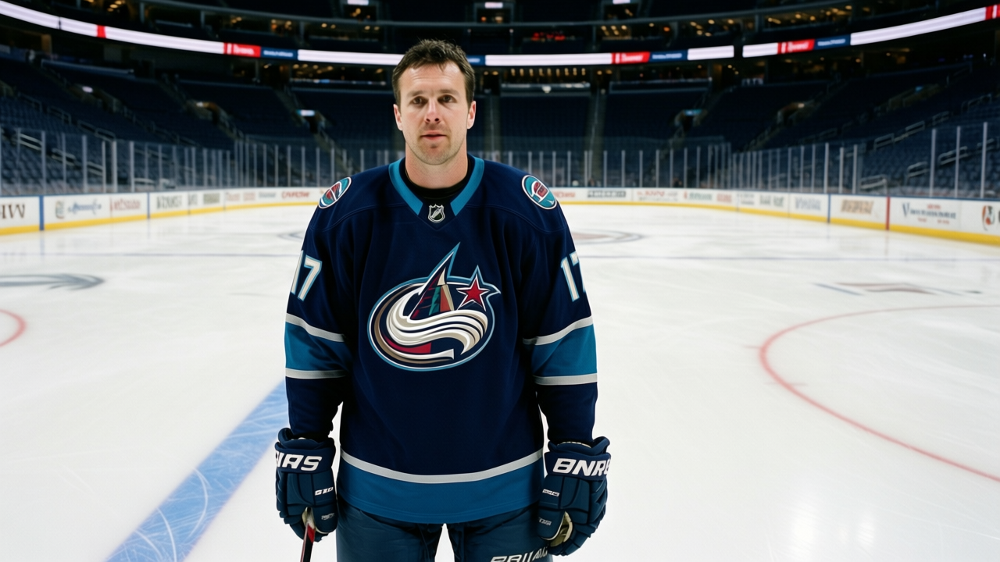

RUMOR METER: Two 91-Pointers at $1.10M on the League's Worst Team. Atlanta's Expiring Twins Are a Fire Sale Waiting to Happen. 🔥🔥
Kovalchuk and Heatley carry the second- and fourth-highest point totals in the expiring class. Their club sits at 26 points and the lowest payroll in the league.
 E.J. "Ears" CallahanInsider · The Hot Stove
E.J. "Ears" CallahanInsider · The Hot Stove

Atlanta's expiring twins: trade before they walk

 Ilya Kovalchuk86 has 59 points in 34 games at $1.10M.
Ilya Kovalchuk86 has 59 points in 34 games at $1.10M.  Dany Heatley84 has 54 points in 31 games at $1.10M. They are 21 and 23 years old. They are rated 91 and 89 in the Book. They play for
Dany Heatley84 has 54 points in 31 games at $1.10M. They are 21 and 23 years old. They are rated 91 and 89 in the Book. They play for  Atlanta Thrashers, which is 8-20-2 through 34 games with 26 points, tied for the fewest in the 30-club league.
Atlanta Thrashers, which is 8-20-2 through 34 games with 26 points, tied for the fewest in the 30-club league.
Kovalchuk's 59 points are the second-highest total among all players in the expiring class, behind  Sergei Samsonov81's 65 in
Sergei Samsonov81's 65 in  Boston Bruins. Heatley's 54 tie him with
Boston Bruins. Heatley's 54 tie him with  Martin Havlat86 for third. No other club has two players in the top five of the expiring scorer list. Atlanta does.
Martin Havlat86 for third. No other club has two players in the top five of the expiring scorer list. Atlanta does.
Atlanta Thrashers carries $36.79M in payroll, the lowest of the 30. Their revenue is $38.82M, also the lowest. They draw 13,580 a night. The club owns all five of its own draft picks and holds no other club's selections. The math is blunt: they cannot re-sign both players at market value next July, and if they do nothing both walk in free agency with nothing returned.
Heatley landed on the injured list between December 28 and December 29, return December 30. Unspecified. One game missed. That is noise, not a story.
The story is the asking price. A man who would know says the floor for Kovalchuk is two first-round picks and a top prospect. For Heatley, two seconds and a similar package. That is a rental price on players who could be your franchise for a decade. Atlanta knows what it has, and the ask reflects that.
The buyer list
Who has room and need?  Nashville Predators carries $46.77M and 7 players on the injured list, including
Nashville Predators carries $46.77M and 7 players on the injured list, including  Greg Johnson82 (neck, back January 11) and Martin Rucinsky81 (knee, back January 1). They are 19-9-4, 48 points, first in the [[team:NSH|Central]], and thin up front.
Greg Johnson82 (neck, back January 11) and Martin Rucinsky81 (knee, back January 1). They are 19-9-4, 48 points, first in the [[team:NSH|Central]], and thin up front.  Colorado Avalanche has $71.56M committed and
Colorado Avalanche has $71.56M committed and  Paul Kariya90 out with a leg until January 23; they score 166 goals but lost their top LW for a month.
Paul Kariya90 out with a leg until January 23; they score 166 goals but lost their top LW for a month.  Minnesota Wild has $29.97M in payroll, 29 points, and the league's lowest spending level among playoff-adjacent clubs.
Minnesota Wild has $29.97M in payroll, 29 points, and the league's lowest spending level among playoff-adjacent clubs.
None of those clubs appear in recent coverage this week, which means the market has not yet priced what Atlanta is offering.
The desk's read: Atlanta Thrashers moves one of the two before the deadline. The question is which one they value more, and the answer is probably neither, because both are more valuable as trade chips in January than as players on an 8-20-2 team that has no path to 90 points this season.
If a call comes in with two firsts and a prospect for Kovalchuk, the phone gets answered.